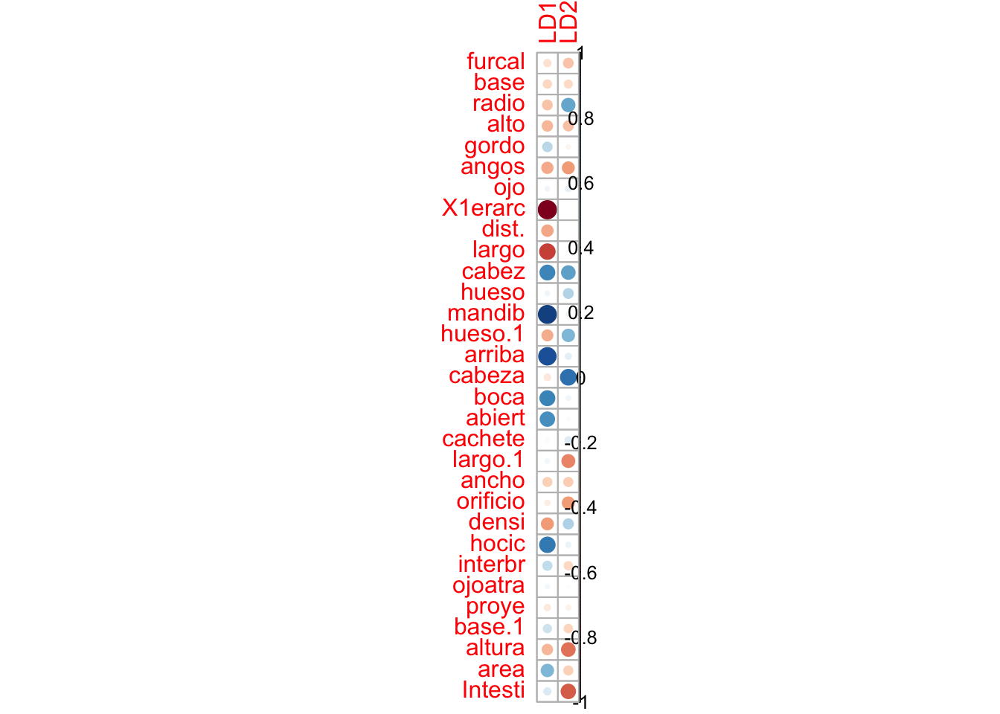
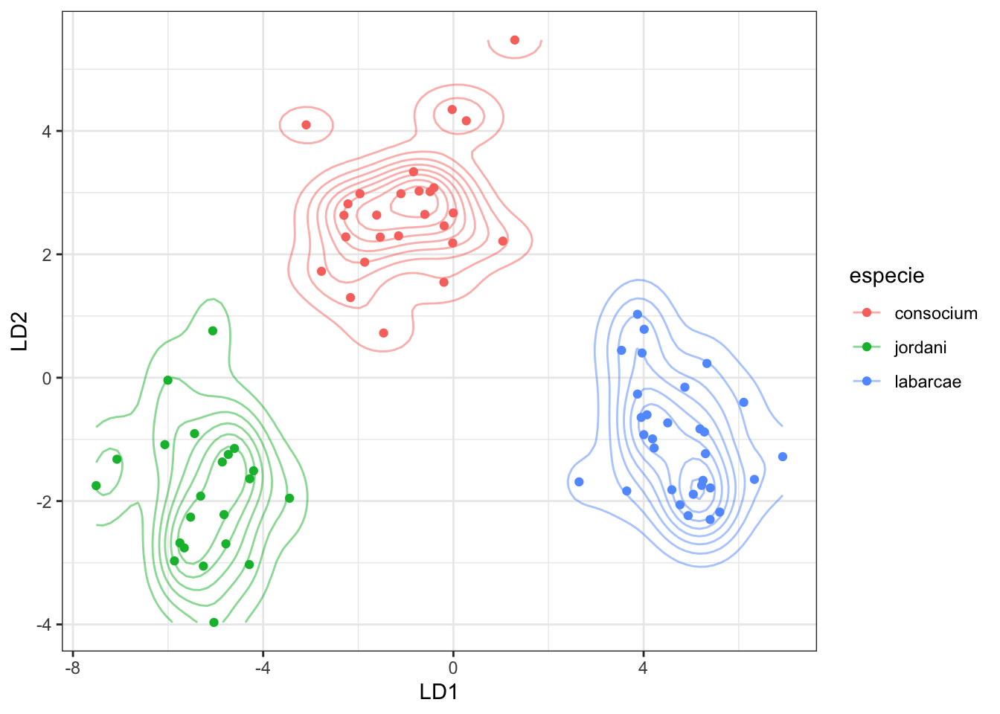
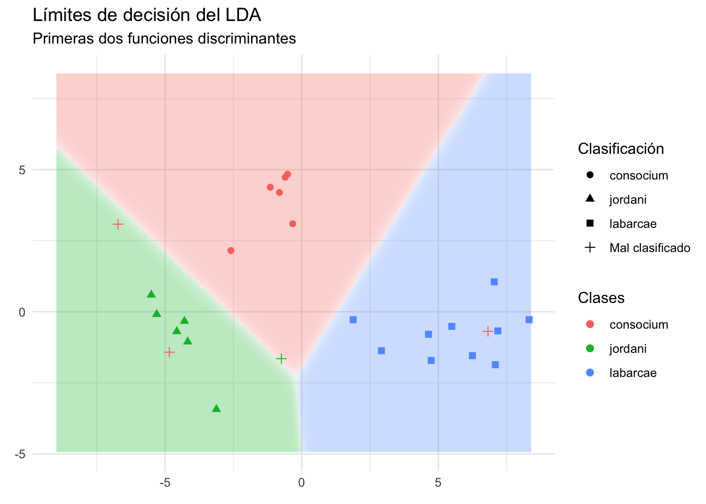
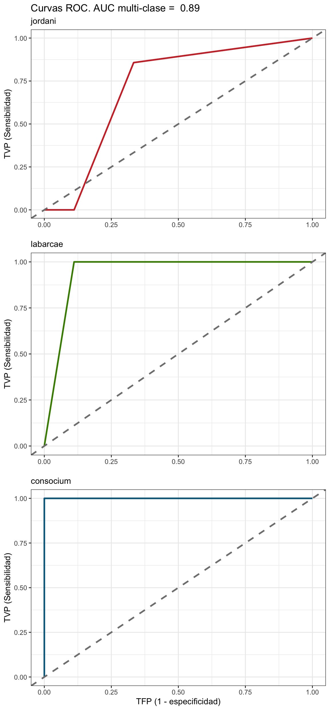
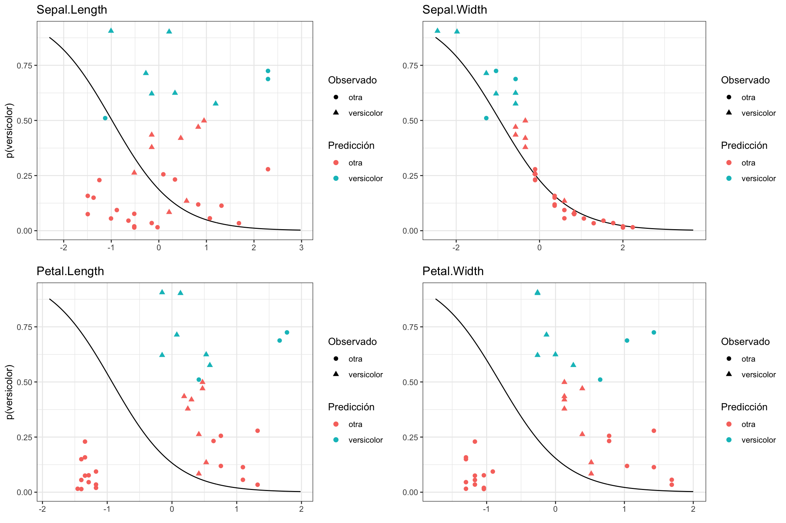
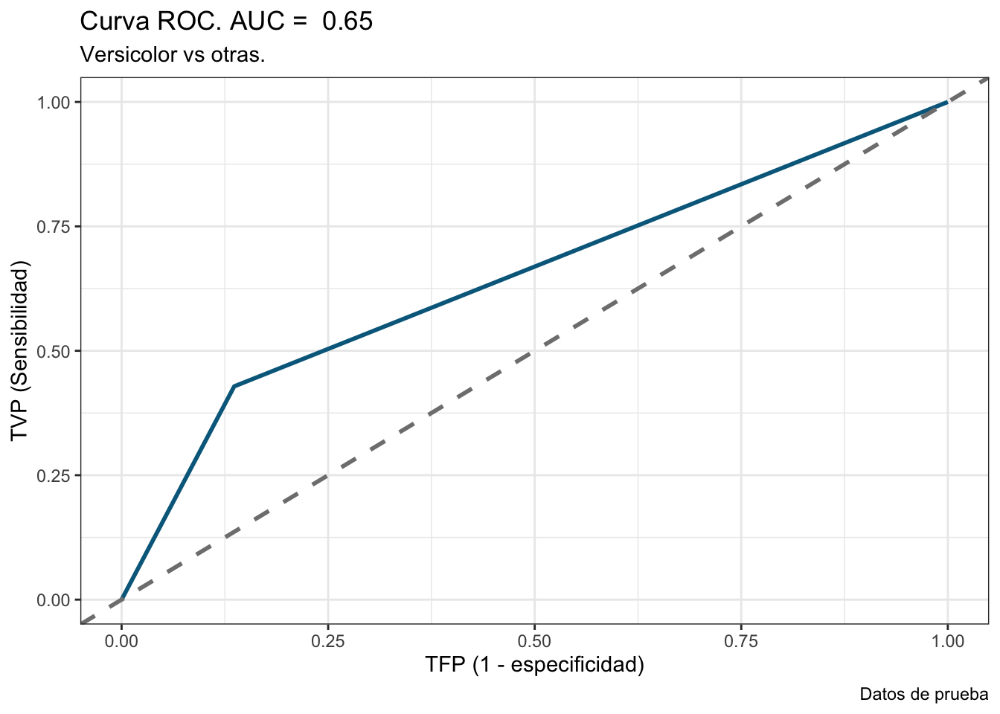

T4: Clasificación
M. en C. Arturo Bell Enríquez García
Datos
# Tema personalizado
blank_theme <- function(aspect.ratio = 1/1.61){
theme(panel.grid.minor = element_blank(),
panel.grid.major = element_blank(),
panel.background = element_blank(),
axis.line = element_blank(),
aspect.ratio = aspect.ratio,
axis.ticks = element_blank(),
text = element_text(colour = "gray50"), # Eliminar
legend.position = "none"
)
}El objetivo de un problema de clasificación es utilizar distintas variables (características) para predecir la clase/etiqueta de una instancia. Todas las técnicas de clasificación son técnicas de aprendizaje automatizado; es decir, bajo la definición que dimos al inicio de esta sección, no haremos pruebas de hipótesis de nulidad per-se.
Revisemos entonces algunas técnicas de clasificación utilizando la misma base de datos que utilizamos en el tema de Análisis de Componentes Principales:
library(factoextra)
library(FactoMineR)
#Base de datos completa
x1n <- read.table('data/Medidas.txt', header = TRUE)
#Base de datos sin nombres de especies
x1 <- x1n[ ,2:length(x1n) ]
summary(x1)## furcal base radio alto
## Min. :0.2527 Min. :0.07088 Min. :0.04408 Min. :0.05319
## 1st Qu.:0.2716 1st Qu.:0.09108 1st Qu.:0.06748 1st Qu.:0.06709
## Median :0.2753 Median :0.09679 Median :0.07090 Median :0.07140
## Mean :0.2757 Mean :0.09645 Mean :0.07048 Mean :0.07116
## 3rd Qu.:0.2801 3rd Qu.:0.10142 3rd Qu.:0.07430 3rd Qu.:0.07534
## Max. :0.3202 Max. :0.11394 Max. :0.08311 Max. :0.09723
## gordo angos ojo X1erarc
## Min. :0.02679 Min. :0.02996 Min. :0.02142 Min. :0.03485
## 1st Qu.:0.04139 1st Qu.:0.03465 1st Qu.:0.02451 1st Qu.:0.04332
## Median :0.04402 Median :0.03577 Median :0.02673 Median :0.05129
## Mean :0.04405 Mean :0.03616 Mean :0.02740 Mean :0.05158
## 3rd Qu.:0.04680 3rd Qu.:0.03745 3rd Qu.:0.02875 3rd Qu.:0.05899
## Max. :0.05859 Max. :0.04727 Max. :0.08191 Max. :0.07738
## dist. largo cabez hueso
## Min. :0.007179 Min. :0.004202 Min. :0.07311 Min. :0.02857
## 1st Qu.:0.030485 1st Qu.:0.022402 1st Qu.:0.08476 1st Qu.:0.03236
## Median :0.035368 Median :0.029488 Median :0.08951 Median :0.03415
## Mean :0.031366 Mean :0.026533 Mean :0.08860 Mean :0.03488
## 3rd Qu.:0.038824 3rd Qu.:0.034574 3rd Qu.:0.09284 3rd Qu.:0.03582
## Max. :0.048008 Max. :0.051843 Max. :0.09815 Max. :0.10411
## mandib hueso.1 arriba cabeza
## Min. :0.03141 Min. :0.02348 Min. :0.01855 Min. :0.07118
## 1st Qu.:0.03598 1st Qu.:0.03917 1st Qu.:0.02546 1st Qu.:0.08309
## Median :0.03980 Median :0.04413 Median :0.02952 Median :0.08796
## Mean :0.03923 Mean :0.04498 Mean :0.02946 Mean :0.08890
## 3rd Qu.:0.04247 3rd Qu.:0.04995 3rd Qu.:0.03391 3rd Qu.:0.09483
## Max. :0.04758 Max. :0.08783 Max. :0.03828 Max. :0.10760
## boca abiert cachete largo.1
## Min. :0.02828 Min. :0.01810 Min. :0.02938 Min. :0.008724
## 1st Qu.:0.03476 1st Qu.:0.02348 1st Qu.:0.03911 1st Qu.:0.012881
## Median :0.03830 Median :0.02531 Median :0.04308 Median :0.014240
## Mean :0.03954 Mean :0.02547 Mean :0.04237 Mean :0.014366
## 3rd Qu.:0.04368 3rd Qu.:0.02741 3rd Qu.:0.04508 3rd Qu.:0.015936
## Max. :0.05552 Max. :0.03248 Max. :0.06553 Max. :0.026475
## ancho orificio densi hocic
## Min. :0.00274 Min. :0.01968 Min. :0.6990 Min. :0.01546
## 1st Qu.:0.02663 1st Qu.:0.03741 1st Qu.:0.7782 1st Qu.:0.02491
## Median :0.03031 Median :0.04381 Median :0.8451 Median :0.02929
## Mean :0.03253 Mean :0.04429 Mean :0.8401 Mean :0.02937
## 3rd Qu.:0.03447 3rd Qu.:0.05085 3rd Qu.:0.9031 3rd Qu.:0.03294
## Max. :0.22628 Max. :0.07390 Max. :1.1139 Max. :0.04922
## interbr ojoatra proye base.1
## Min. :0.007687 Min. :0.02685 Min. :0.007313 Min. :0.01546
## 1st Qu.:0.014457 1st Qu.:0.03796 1st Qu.:0.013341 1st Qu.:0.02052
## Median :0.015776 Median :0.04050 Median :0.014982 Median :0.02238
## Mean :0.016304 Mean :0.04067 Mean :0.016217 Mean :0.02300
## 3rd Qu.:0.017609 3rd Qu.:0.04256 3rd Qu.:0.016613 3rd Qu.:0.02474
## Max. :0.028804 Max. :0.08124 Max. :0.127873 Max. :0.04476
## altura area Intesti
## Min. :0.02514 Min. :0.001431 Min. :0.1295
## 1st Qu.:0.03815 1st Qu.:0.006723 1st Qu.:0.1774
## Median :0.04422 Median :0.009716 Median :0.1960
## Mean :0.04474 Mean :0.010638 Mean :0.1980
## 3rd Qu.:0.04928 3rd Qu.:0.014274 3rd Qu.:0.2150
## Max. :0.08398 Max. :0.027268 Max. :0.3246División, centrado y estandarizado de datos
Al tratarse de un modelo de aprendizaje automatizado es importante que realicemos nuestra división entrenamiento/prueba para evaluar el ajuste del modelo de clasificación:
library(caTools)
library(caret)##
## Attaching package: 'caret'## The following object is masked from 'package:vegan':
##
## tolerance## The following objects are masked from 'package:DescTools':
##
## MAE, RMSEset.seed(1111)
sample <- sample.split(x1n$especie, SplitRatio = .75)
train <- subset(x1n, sample == TRUE)
test <- subset(x1n, sample == FALSE)Centremos y estandaricemos los datos:
pre_pars <- preProcess(train, method = c("center", "scale"))
train_t <- predict(pre_pars, train)
test_t <- predict(pre_pars, test)Análisis de Funciones Discriminantes
El primer modelo con el que trabajaremos es el Análisis de Funciones Discriminantes. En esta técnica se utilizan combinaciones lineales de las variables originales para predecir la clase de una instancia, de modo que se tratarán de encontrar nuevas variables que maximicen la separación entre clases. Para que esta técnica funcione adecuadamente es importante que las medias entre los grupos sean diferentes (podemos aplicar un MANOVA/PERMANOVA previo) y que las dispersiones multivariadas entre los grupos sean relativamente constantes (homocedasticidad multivariada). A partir de lo anterior, es fácil entender a este análisis como una mezcla entre el MANOVA y ACP.
Ajuste del modelo
Apliquemos el Análisis Discriminante Lineal. Las probabilidades previas representan la proporción de cada grupo en la base de datos, las medias de los grupos las medias de cada grupo para cada variable, los coeficientes aprendidos por el modelo según los datos de entrenamiento y la proporción de la traza es la proporción de la varianza explicada por cada ecuación discriminante.
lda_mod <- MASS::lda(especie~., data = train_t)
lda_mod## Call:
## lda(especie ~ ., data = train_t)
##
## Prior probabilities of groups:
## consocium jordani labarcae
## 0.3333333 0.2820513 0.3846154
##
## Group means:
## furcal base radio alto gordo angos
## consocium -0.27239867 -0.1611638 0.63378818 -0.2478593 -0.1101955 -0.3803264
## jordani 0.36978089 0.3538899 -0.08733179 0.5618379 -0.2484665 0.7205529
## labarcae -0.03509381 -0.1198439 -0.48523978 -0.1972031 0.2777115 -0.1987893
## ojo X1erarc dist. largo cabez hueso
## consocium 0.09264739 0.2144553 0.08430157 0.1499676 0.4599422 0.29791183
## jordani -0.13400176 1.1016534 0.41922847 0.7816530 -1.1268342 -0.27518895
## labarcae 0.01797355 -0.9937404 -0.38049557 -0.7031841 0.4277285 -0.05638502
## mandib hueso.1 arriba cabeza boca abiert
## consocium -0.1350847 0.57353663 -0.07769342 0.8313447 -0.07404553 -0.0995833
## jordani -1.1191233 0.04897799 -1.07793758 -0.4147328 -0.77198065 -0.6994560
## labarcae 0.9377638 -0.53298228 0.85782185 -0.4163614 0.63029194 0.5992399
## cachete largo.1 ancho orificio densi hocic
## consocium 0.14378260 -0.5532935 -0.2135984 -0.45224471 0.4142481 -0.06895108
## jordani -0.06177900 0.3066528 0.4361758 0.40599544 0.2418548 -0.83621678
## labarcae -0.07930699 0.2546422 -0.1347437 0.09421543 -0.5363752 0.67298324
## interbr ojoatra proye base.1 altura area
## consocium -0.2677804 -0.02876978 -0.04894378 -0.26537856 -0.53739820 -0.3555283
## jordani -0.1140360 -0.04914858 0.16971481 -0.06077242 0.76287054 -0.3222543
## labarcae 0.3157027 0.06097610 -0.08203958 0.27456120 -0.09369329 0.5444443
## Intesti
## consocium -0.7077703
## jordani 0.3010229
## labarcae 0.3926508
##
## Coefficients of linear discriminants:
## LD1 LD2
## furcal 0.028526771 -0.391614791
## base -0.209139809 -0.227408806
## radio -0.061305903 0.221130285
## alto 0.168798201 -0.224047615
## gordo 0.634093713 0.209065251
## angos -0.758743387 -0.139034212
## ojo 0.123364337 -0.007622951
## X1erarc -1.997627631 -0.235408480
## dist. -0.053552688 -0.147007173
## largo -0.046825454 0.389589901
## cabez 0.203836005 0.646888740
## hueso -0.033319442 0.029258810
## mandib 0.918796636 -0.408134075
## hueso.1 -0.449510944 0.627524539
## arriba 1.125104935 -0.007142905
## cabeza -0.493254681 0.948682851
## boca -0.163258105 0.388505301
## abiert 0.011259084 -0.373641604
## cachete 0.234498784 0.639571836
## largo.1 -0.637704833 -0.263752163
## ancho -0.125785157 0.036733196
## orificio 0.008486124 -0.513403328
## densi -0.364318989 0.048784740
## hocic -0.337415062 0.182388583
## interbr 0.532901007 -0.005325388
## ojoatra -0.067049359 -0.338594926
## proye -0.343082471 -0.025104445
## base.1 0.190284049 0.262195074
## altura -0.094050504 -0.223923073
## area -0.134056419 -0.247898344
## Intesti 0.243726491 -0.309536900
##
## Proportion of trace:
## LD1 LD2
## 0.8141 0.1859Importancia de variables
Calculemos la correlación entre las variables originales y las dos funciones discriminantes
adj_vals <- as.data.frame(predict(lda_mod, train_t)$x)
adj_vals["especie"] <- train_t["especie"]
corr <- cor(cbind(as.matrix(train_t[,2:32])),
adj_vals[,1:2])
corr## LD1 LD2
## furcal -0.13141273 -0.2457755403
## base -0.17400395 -0.1640832259
## radio -0.24496179 0.4650184432
## alto -0.28012983 -0.2547783331
## gordo 0.23041878 -0.0444178857
## angos -0.32899744 -0.3713816134
## ojo 0.05056099 0.0847301419
## X1erarc -0.88877042 0.0010272598
## dist. -0.33952156 0.0023146043
## largo -0.62954328 -0.0008393222
## cabez 0.57984949 0.4844248183
## hueso 0.05165890 0.2509373702
## mandib 0.86274763 0.0581108077
## hueso.1 -0.31286833 0.4031217248
## arriba 0.80559067 0.0934352143
## cabeza -0.10746724 0.6514499754
## boca 0.58585544 0.0537619900
## abiert 0.54656544 0.0254886911
## cachete -0.02567501 0.1112945128
## largo.1 0.04970162 -0.4377992219
## ancho -0.20721195 -0.2129277982
## orificio -0.07004645 -0.3793107927
## densi -0.37307363 0.2626291405
## hocic 0.62914887 0.0662796506
## interbr 0.21102558 -0.1756162121
## ojoatra 0.04895785 -0.0137690705
## proye -0.09718520 -0.0584316340
## base.1 0.17191592 -0.1812602117
## altura -0.28301703 -0.4894841705
## area 0.40189142 -0.2095533890
## Intesti 0.12858271 -0.5474213085corrplot::corrplot(corr, is.corr = T)
Creemos un gráfico de densidad bivariado para conocer la distribución de los grupos en el nuevo espacio:
territ_plot <- ggplot(data = adj_vals, aes(x = LD1, y = LD2, colour = especie)) +
geom_density_2d(show.legend = T, alpha = 0.5) +
geom_point() +
theme_bw()
territ_plot
Diagnóstico del modelo de funciones discriminantes:
Probabilidades de pertenencia
Probabilidad de pertenencia de cada individuo a partir de los datos de prueba:
p <- predict(lda_mod, test_t)$posterior
p.acom <- data.frame(especie = test_t$especie, id = rownames(test_t), p = p)
p.acomPrueba de Ji-cuadrada para verificar un acomodo no aleatorio (p<0.005)
pred.clase <- predict(lda_mod, test_t)$class
jicuad <- chisq.test(test_t$especie, pred.clase, simulate.p.value = T)
jicuad##
## Pearson's Chi-squared test with simulated p-value (based on 2000
## replicates)
##
## data: test_t$especie and pred.clase
## X-squared = 31.445, df = NA, p-value = 0.0004998Matriz de confusión:
confusionMatrix(pred.clase, as.factor(test_t$especie))## Confusion Matrix and Statistics
##
## Reference
## Prediction consocium jordani labarcae
## consocium 6 1 0
## jordani 2 6 0
## labarcae 1 0 10
##
## Overall Statistics
##
## Accuracy : 0.8462
## 95% CI : (0.6513, 0.9564)
## No Information Rate : 0.3846
## P-Value [Acc > NIR] : 1.779e-06
##
## Kappa : 0.7673
##
## Mcnemar's Test P-Value : NA
##
## Statistics by Class:
##
## Class: consocium Class: jordani Class: labarcae
## Sensitivity 0.6667 0.8571 1.0000
## Specificity 0.9412 0.8947 0.9375
## Pos Pred Value 0.8571 0.7500 0.9091
## Neg Pred Value 0.8421 0.9444 1.0000
## Prevalence 0.3462 0.2692 0.3846
## Detection Rate 0.2308 0.2308 0.3846
## Detection Prevalence 0.2692 0.3077 0.4231
## Balanced Accuracy 0.8039 0.8759 0.9688Márgenes de decisión.
En este caso, mostraremos la probabilidad de pertenencia a cada clase (obtenida desde los datos de entrenamiento) como fondo del gráfico y sobrepondremos los datos de prueba. Para poder hacer esto habrá que “simular” datos para nuestro fondo y formar una malla con todos ellos. Desafortunadamente, crear la malla requiere que hagamos cierta trampa. Primero, ajustaremos un modelo LDA para predecir los valores de LD1 y LD2 de cada especie:
# Ajustamos un LDA para "predecir" los valores de las nuevas dimensiones
prob_lda <- MASS::lda(especie ~ ., data = adj_vals)Generamos una función que nos permita generar una malla utilizando esos nuevos valores y que, multiplique los valores de LDA con signo negativo por -1 para evitar una rotación de los datos:
adjust_probs_sp <- function(mesh, probs){
mesh["adj_probs"] <- apply(probs,
1,
FUN = max
)
# Especies predichas; i.e., la especie con mayor probabilidad
## resumir con predict()$class?
mesh["adj_esp"] <- apply(probs,
1,
FUN = function(x){
names(which.max(x))
}
)
return(mesh)
}
dec_bounds <- function(model, adj_vals){
library(scales)
# Calculamos los límites expandidos de LD1 y LD2
ld1lim <- expand_range(c(min(adj_vals$LD1), max(adj_vals$LD1)),
mul=0.1) # Amplía el intervalo un 10% hacia "abajo"
ld2lim <- expand_range(c(min(adj_vals$LD2), max(adj_vals$LD2)),
mul=0.1) # 10% hacia "arriba"
# Generamos 300 valores nuevos de LD1 y LD2 en esos límites:
ld1 <- seq(ld1lim[[1]], ld1lim[[2]],
length.out=300)
ld2 <- seq(ld2lim[[1]], ld1lim[[2]],
length.out=300)
# Generamos un objeto con todas las combinaciones de nuevos valores
newdat <- expand.grid(list(LD1=ld1,LD2=ld2))
# Realizamos predicciones a partir de estos valores
preds <-predict(prob_lda, newdata = newdat)
# Generamos un objeto que contendrá la "malla" con los valores de LD1, LD2, adj_probs y adj_esp
mesh <- as.data.frame(preds$x)
# Probabilidad de pertenencia de los valores simulados:
prob_sim <- as.data.frame(preds$posterior)
# Probabilidades "ajustadas"; i.e., la probabilidad mayor - la suma del resto de probabilidades
mesh <- adjust_probs_sp(mesh, prob_sim)
# Corregimos los valores del eje negativo
axes <- diag(model$scaling)
axis <- names(axes[axes < 0])
mesh[,axis] <- -mesh[,axis]
return(mesh)
}Ahora formamos el gráfico
mesh <- dec_bounds(prob_lda, adj_vals) # Generamos la malla
# Graficamos las probabilidades de decisión
dec.probs <- ggplot(data = mesh, aes(x = LD1, y = LD2, color = adj_esp)) +
geom_raster(aes(fill = adj_esp), alpha = mesh$adj_probs*0.3, show.legend = F) +
theme_minimal()
#adj_vals <- as.data.frame(predict(lda_mod, train_t)$x)
#adj_vals["especie"] <- train_t["especie"]
# Añadimos los datos de prueba
mesh_test <- as.data.frame(predict(lda_mod, test_t)$x) # Valores de LDA para los datos de prueba
mesh_test <- adjust_probs_sp(mesh_test, predict(lda_mod, test_t)$posterior) # Obtener las probabilidades y especies predichas
mesh_test["mark"] <- ifelse(test_t$especie == mesh_test$adj_esp,
test_t$especie,
"Mal clasificado") # Una etiqueta para saber si la instancia está correctamente clasificada
# Añadimos los puntos de prueba, cambiando la forma según la clase predicha por el modelo y el color por la clase observada:
clas.plot <- dec.probs + geom_point(data = mesh_test, aes(x = LD1, y = LD2, shape = mark, color = test$especie), size = 2) +
scale_shape_discrete(name = "Clasificación") +
scale_color_discrete(name = "Clases") +
scale_alpha_continuous(name = "P(decisión)") +
labs(title = "Límites de decisión del LDA",
subtitle = "Primeras dos funciones discriminantes",
x = element_blank(),
y = element_blank())
# Imprimimos el gráfico
clas.plot
mesh_test[mesh_test$mark == "Mal clasificado",]x1n[7,]Podemos también mostrar un gráfico de partición, en el cual se muestra la clasificación según cada variable. Utilizamos la base iris debido a la altísima dimensionalidad de los datos del ejercicio
klaR::partimat(Species~., data = iris, method = "lda")## Registered S3 methods overwritten by 'klaR':
## method from
## predict.rda vegan
## print.rda vegan
## plot.rda vegan
Curva ROC y valor AUC.
Primero obtengamos la curva ROC y el valor de AUC multi-clase.
library(pROC)## Type 'citation("pROC")' for a citation.##
## Attaching package: 'pROC'## The following objects are masked from 'package:stats':
##
## cov, smooth, varlibrary(gridExtra)
test_sp_num <- as.numeric(as.factor(test_t$especie))
pred_clase_num <- as.numeric(as.factor(pred.clase))
roc_cons <- multiclass.roc(test_sp_num, pred_clase_num)## Setting direction: controls < cases## Setting direction: controls < cases
## Setting direction: controls < casesAhora creemos una función personalizada para utilizar un ciclo for para graficar las curvas ROC
plot_rocs <- function(classes, multi_roc, colors, theme, test_t){
theme_set(theme) # Establece el tema a utilizar en todas las gráficas
rocs_plots <- list() # Lista vacía para llenar con las gráficas
counter <- seq_along(unique(classes)) # Valores a ciclar (clases)
for (i in counter) { # para cada i en clases
if (i == 1) { # Si i == 1
rocs_plots[[i]] <- ggroc(multi_roc$rocs[[i]], color = colors[i], size = 1, legacy.axes = T) + # graficado de la curva ROC para la especie i
labs(title = paste("Curvas ROC. AUC multi-clase = ", round(roc_cons$auc[1],2)), # Establecemos el título global de la gráfica
subtitle = sprintf("%s", unique(test_t$especie)[i]), # clase como subtítulo
x = element_blank(), # Sin nombre del eje x
y = "TVP (Sensibilidad)") +
geom_abline(intercept = 0, slope = 1, color = "gray50", size = 1, linetype = "dashed") # Línea de referencia (Azar)
}
if (i < length(counter) & i > 1) {
rocs_plots[[i]] <- ggroc(roc_cons$rocs[[i]], color = colors[i], size = 1, legacy.axes = T) +
labs(subtitle = sprintf("%s", unique(test_t$especie)[i]),
x = element_blank(),
y = "TVP (Sensibilidad)") +
geom_abline(intercept = 0, slope = 1, color = "gray50", size = 1, linetype = "dashed")
}
if (i == length(counter)) {
rocs_plots[[i]] <- ggroc(roc_cons$rocs[[i]], color = colors[i], size = 1, legacy.axes = T) +
labs(subtitle = sprintf("%s", unique(test_t$especie)[i]),
x = "TFP (1 - especificidad)", # Se agrega el nombre del eje x para todas las gráficas (ojo a que es una sola columna)
y = "TVP (Sensibilidad)") +
geom_abline(intercept = 0, slope = 1,color = "gray50", size = 1, linetype = "dashed")
}
}
do.call('grid.arrange', c(rocs_plots, ncol = 1))
}Ahora grafiquémoslas:
# Colores de las especies:
colors <- c("brown3", "chartreuse4", "deepskyblue4")
#cairo_pdf("ROC_LDA.pdf", height = 12.9, width = 7 )
plot_rocs(test_sp_num, roc_cons, colors, theme_bw(), test_t)
#dev.off()Regresión logística
Otra técnica que podemos utilizar es la regresión logística. Es importante recordar que este modelo de clasificación fue desarrollado originalmente para clasificaciones binarias, aunque ya ha sido extendido a clasificaciones multinomiales. Comencemos con el caso binario. En este caso, utilicemos la base iris para cambiar un poco de aires y cambiemos las etiquetas a versicolor y otra
iris_dat <- iris
iris_dat$Species <- ifelse(iris_dat$Species == "versicolor", "versicolor", "otra")
samples <- sample.split(iris_dat$Species, SplitRatio = .75)
train2 <- subset(iris_dat, sample == TRUE)
test2 <- subset(iris_dat, sample == FALSE)Centremos y estandaricemos:
pre_pars <- preProcess(train2, method = c("center", "scale"))
train_t2 <- predict(pre_pars, train2)
test_t2 <- predict(pre_pars, test2)Ajuste del modelo
A diferencia del caso anterior, vamos a implementar el modelo utilizando la librería caret (Classification and Regression Training). Esta librería nos permite entrenar modelos de clasificación o regresión de manera sencilla o, mejor dicho, homogeneiza el proceso de declaración de modelos y nos evita estar batallando con las librerías propias. Veámoslo en acción:
logit_reg <- caret::train(form = as.factor(Species)~.,
data = train_t2,
method = "glm",
family = "binomial")Importancia de variables
Veamos los coeficientes:
summary(logit_reg)##
## Call:
## NULL
##
## Deviance Residuals:
## Min 1Q Median 3Q Max
## -2.0676 -0.7632 -0.4016 0.8363 2.0392
##
## Coefficients:
## Estimate Std. Error z value Pr(>|z|)
## (Intercept) -1.0835 0.2603 -4.162 3.16e-05 ***
## Sepal.Length 0.1491 0.6608 0.226 0.821483
## Sepal.Width -1.3483 0.4002 -3.369 0.000754 ***
## Petal.Length 1.4449 1.3274 1.089 0.276350
## Petal.Width -1.5854 0.9569 -1.657 0.097566 .
## ---
## Signif. codes: 0 '***' 0.001 '**' 0.01 '*' 0.05 '.' 0.1 ' ' 1
##
## (Dispersion parameter for binomial family taken to be 1)
##
## Null deviance: 142.19 on 113 degrees of freedom
## Residual deviance: 111.24 on 109 degrees of freedom
## AIC: 121.24
##
## Number of Fisher Scoring iterations: 5Diagnóstico de la regresión logística
Matriz de confusión
test_preds <- predict(logit_reg, test_t2)
confusionMatrix(test_preds, as.factor(test_t2$Species))## Confusion Matrix and Statistics
##
## Reference
## Prediction otra versicolor
## otra 19 8
## versicolor 3 6
##
## Accuracy : 0.6944
## 95% CI : (0.5189, 0.8365)
## No Information Rate : 0.6111
## P-Value [Acc > NIR] : 0.1975
##
## Kappa : 0.3125
##
## Mcnemar's Test P-Value : 0.2278
##
## Sensitivity : 0.8636
## Specificity : 0.4286
## Pos Pred Value : 0.7037
## Neg Pred Value : 0.6667
## Prevalence : 0.6111
## Detection Rate : 0.5278
## Detection Prevalence : 0.7500
## Balanced Accuracy : 0.6461
##
## 'Positive' Class : otra
## confusionMatrix(predict(logit_reg, train_t2), as.factor(train_t2$Species))## Confusion Matrix and Statistics
##
## Reference
## Prediction otra versicolor
## otra 69 19
## versicolor 9 17
##
## Accuracy : 0.7544
## 95% CI : (0.6649, 0.8302)
## No Information Rate : 0.6842
## P-Value [Acc > NIR] : 0.06303
##
## Kappa : 0.3857
##
## Mcnemar's Test P-Value : 0.08897
##
## Sensitivity : 0.8846
## Specificity : 0.4722
## Pos Pred Value : 0.7841
## Neg Pred Value : 0.6538
## Prevalence : 0.6842
## Detection Rate : 0.6053
## Detection Prevalence : 0.7719
## Balanced Accuracy : 0.6784
##
## 'Positive' Class : otra
## Predicciones y observaciones
preds_probs <- data.frame(test_t2, P_vers = predict(logit_reg, test_t2, type = "prob")$versicolor, adj_sp = test_preds)
preds_probsCurvas de decisión
Ahora realicemos el gráfico de la regresión logística o, mejor dicho, los gráficos para cada variable. Al igual que para el LDA el proceso es generar nuevos valores para la línea de decisión y después superponer los valores de prueba.Generemos entonces los valores:
sim_values <- function(x){
library(scales)
# Calculamos los límites expandidos de LD1 y LD2
varlim <- expand_range(c(min(x), max(x)),
mul=0.1) # Amplía el intervalo un 5% hacia "abajo"
# Generamos 300 valores nuevos de LD1 y LD2 en esos límites:
var_exp <- seq(varlim[[1]], varlim[[2]],
length.out=300)
return(var_exp)
}
sim_logdata <- as.data.frame(apply(train_t2[-c(5)], 2, sim_values))
sim_logdata["probs"] <- predict(logit_reg, sim_logdata, type = "prob")$versicolor
head(sim_logdata)Formemos el gráfico. Al igual que en el caso anterior lo haremos mediante una función para poder generarlos todos en un solo paso
plot_partials <- function(sim_data, test_preds, prob_col, prob_col2, pos_class){
partials <- list()
vars <- colnames(sim_data)[colnames(sim_data)!=prob_col]
for (i in seq_along(vars)) {
temp <- data.frame(a = sim_data[,vars[i]], probs = sim_data[,prob_col])
temp2 <- data.frame(b = test_preds[,vars[i]], test_preds)
if ((i%%2) != 0) { # Si el residuo de la división es != 0; el número de gráfica es non
partials[[i]] <- ggplot(data = temp, aes(x = a, y = probs)) +
geom_line() +
geom_point(data = temp2,
aes(x = b, y = P_vers, color = adj_sp, shape = Species),
size = 2) +
labs(title = vars[i],
x = element_blank(),
y = sprintf("p(%s)", pos_class)) +
scale_color_discrete(name = "Predicción") +
scale_shape_discrete(name = "Observado")
}
else {# Si el residuo de la división es == 0; el número de gráfica es par
partials[[i]] <- ggplot(data = temp, aes(x = a, y = probs)) +
geom_line() +
geom_point(data = temp2,
aes(x = b, y = P_vers, color = adj_sp, shape = Species),
size = 2) +
labs(title = vars[i],
x = element_blank(),
y = element_blank()) +
scale_color_discrete(name = "Predicción") +
scale_shape_discrete(name = "Observado")
}
}
do.call('grid.arrange', c(partials, nrow = 2))
}plot_partials(sim_logdata, preds_probs, "probs", "P_vers", "versicolor")
ROC y AUC
test_sp_num <- as.numeric(as.factor(test_t2$Species))
pred_clase_num <- as.numeric(as.factor(test_preds))
roc_logit <- roc(test_sp_num, pred_clase_num)## Setting levels: control = 1, case = 2## Setting direction: controls < casesauc_logit <- auc(test_sp_num, pred_clase_num)## Setting levels: control = 1, case = 2
## Setting direction: controls < casesroc_plot <- ggroc(roc_logit, color = "deepskyblue4", size = 1, legacy.axes = T) + # graficado de la curva ROC para la especie i
labs(title = paste("Curva ROC. AUC = ", round(auc_logit,2)), # Establecemos el título global de la gráfica
subtitle = "Versicolor vs otras.", # clase como subtítulo
x = "TFP (1 - especificidad)", # Sin nombre del eje x
y = "TVP (Sensibilidad)",
caption = "Datos de prueba") +
geom_abline(intercept = 0, slope = 1, color = "gray50", size = 1, linetype = "dashed") # Línea de referencia (Azar)
roc_plot
Regresión Logística multinomial
Por último, veamos cómo se ajusta un modelo multinomial; i.e., un clasificador para más de dos clases
iris_dat <- iris
samples <- sample.split(iris_dat$Species, SplitRatio = .75)
train3 <- subset(iris_dat, sample == TRUE)
test3 <- subset(iris_dat, sample == FALSE)Centremos y estandaricemos:
pre_pars <- preProcess(train3, method = c("center", "scale"))
train_t3 <- predict(pre_pars, train3)
test_t3 <- predict(pre_pars, test3)Ajuste del modelo
A diferencia del caso anterior, vamos a implementar el modelo utilizando la librería caret (Classification and Regression Training). Esta librería nos permite entrenar modelos de clasificación o regresión de manera sencilla o, mejor dicho, homogeneiza el proceso de declaración de modelos y nos evita estar batallando con las librerías propias. Veámoslo en acción:
logit_mult <- caret::train(form = as.factor(Species)~.,
data = train_t3,
method = "multinom",
trace = F)
summary(logit_mult)## Call:
## nnet::multinom(formula = .outcome ~ ., data = dat, decay = param$decay,
## trace = ..1)
##
## Coefficients:
## (Intercept) Sepal.Length Sepal.Width Petal.Length Petal.Width
## versicolor 8.06394 1.4575030 -2.263957 6.711222 5.27363
## virginica -10.38752 0.5382543 -4.804585 22.046350 17.55141
##
## Std. Errors:
## (Intercept) Sepal.Length Sepal.Width Petal.Length Petal.Width
## versicolor 34.96486 64.58124 19.70423 71.79894 67.67309
## virginica 36.15874 64.62893 19.78369 72.27143 68.05214
##
## Residual Deviance: 11.04544
## AIC: 31.04544test_preds <- predict(logit_mult, test_t3)
confusionMatrix(test_preds, as.factor(test_t3$Species))## Confusion Matrix and Statistics
##
## Reference
## Prediction setosa versicolor virginica
## setosa 12 0 0
## versicolor 0 14 0
## virginica 0 0 10
##
## Overall Statistics
##
## Accuracy : 1
## 95% CI : (0.9026, 1)
## No Information Rate : 0.3889
## P-Value [Acc > NIR] : 1.713e-15
##
## Kappa : 1
##
## Mcnemar's Test P-Value : NA
##
## Statistics by Class:
##
## Class: setosa Class: versicolor Class: virginica
## Sensitivity 1.0000 1.0000 1.0000
## Specificity 1.0000 1.0000 1.0000
## Pos Pred Value 1.0000 1.0000 1.0000
## Neg Pred Value 1.0000 1.0000 1.0000
## Prevalence 0.3333 0.3889 0.2778
## Detection Rate 0.3333 0.3889 0.2778
## Detection Prevalence 0.3333 0.3889 0.2778
## Balanced Accuracy 1.0000 1.0000 1.0000Y la importancia de variables:
varImp(logit_mult, scale = T)## multinom variable importance
##
## Overall
## Petal.Length 100.00
## Petal.Width 77.83
## Sepal.Width 18.96
## Sepal.Length 0.00Ejercicio
Realizar una regresión logística multinomial con los datos de morfometría de peces (Medidas.txt). Responde lo siguiente: 1. ¿El modelo se encuentra sobre ajustado? ¿Por qué? 2. Obtén las curvas ROC y el valor de AUC multi-clase. ¿que tan bueno consideras al modelo? 3. ¿Cuáles fueron las variables más importantes para la clasificación? Compara con los resultados del ACP de la clase de reducción de dimensionalidad y los del LDA.